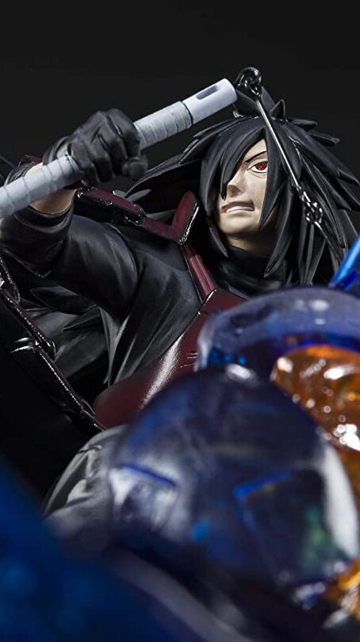

Exclusive Naruto Figurines

Naruto Shippuden - Uchiha Madara -Isou Susanoo- - KIZUNA Relation, Bandai TamashiiNations Figuarts Zero
FEATURES
- Theme: Anime
- Brand: TAMASHII NATIONS
- Item Dimensions (L x W x H): 3 x 3 x 10 inches
- Color: Multicolor
- Material: Acrylonitrile Butadiene Styrene
- Collection Name: TamashiiNations Figuarts Zero
- Watch Product Review
ABOUT THIS ITEM
- The popular animation NARUTO Shippuden 's theme of the bonds of friendship takes form with the Kizuna series of connectable figurines!
- They're high-impact distillations of the NARUTO world, finished with gorgeous effects.
- The set includes the figure and a stand.
- Approx. 10in Wide, Highly Detailed, Anime Accurate
- Only product with affixed official Bluefin and Bandai Namco label has been thoroughly tested for safety and meets all North American consumer product safety regulations and entitles the purchaser to product support assistance
PRICE : RM 129.99